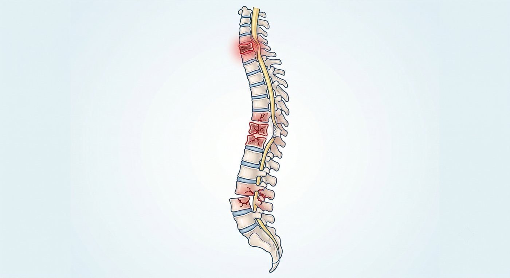

摔倒、車禍後腰背劇痛？小心可能不只是單純拉傷。
不論是不小心跌坐、從梯子滑落、高處跌落，或是汽機車碰撞事故，外力都有可能直接作用在脊椎上。
很多人在外傷發生後，以為只是肌肉拉傷、挫傷或閃到腰，選擇回家貼布、休息、忍一忍。
但如果疼痛越來越劇烈，甚至影響翻身、起床、站立或走路，就要小心可能不是單純外傷，而是脊椎結構已經受到傷害。
尤其是年長者、骨質疏鬆患者，或原本就有脊椎退化問題的人，即使只是一次跌倒，也可能造成比想像中更嚴重的脊椎傷害。
脊椎外傷可能造成哪些問題？
脊椎不只是支撐身體的骨架，也是保護神經的重要結構。
外傷後可能造成：
- 脊椎壓迫性骨折：椎體被壓扁，常見於跌倒或骨質疏鬆患者
- 脊椎爆裂性骨折：外力較大時，椎體可能碎裂，甚至影響神經空間
- 脊椎滑脫或不穩定：骨頭或韌帶受傷，導致脊椎無法維持原本支撐力
- 椎間盤突出惡化：外傷後椎間盤突出，壓迫神經
神經或脊髓損傷：可能造成麻木、無力，嚴重時影響行走、大小便功能，甚至造成癱瘓
所以，跌倒或車禍後的腰背痛，不能只用「有沒有瘀青」來判斷嚴重程度。

什麼症狀需要立即就醫？
如果只是單純腰背痛、還能行走、沒有麻木無力，可以儘早安排門診評估。
急性神經受傷需要搶時間。
越早確認是否有脊髓或神經壓迫，越有機會減少不可逆的神經損傷。
如果跌倒、車禍或撞擊後，出現以下情況，建議儘快就醫評估：
- 腰背部出現劇烈疼痛
- 稍微翻身、起床或站立就痛到無法忍受
- 疼痛持續加劇，休息後仍沒有改善
- 背部或腰部有明顯壓痛點
- 姿勢無法挺直，感覺腰背卡住
- 腳麻、腳痛、電擊感或針刺感
- 下肢無力，踩地使不上力
- 走路不穩，或感覺腳不聽使喚
- 軀幹或雙腳出現感覺遲鈍
- 年長者、骨質疏鬆患者，或曾經脊椎骨折者
- 如果出現大小便困難、失禁、會陰部麻木、雙
腳明顯無力，或無法站立行走，可能代表神經或脊髓受到嚴重壓迫，應立即到急診處理。
外傷後如果疼痛明顯，不建議貿然推拿、整脊或強行活動，應先確認是否有骨折、脊椎不穩定或神經受壓。
脊椎外傷一定要開刀嗎？
不一定。
不是每一個脊椎外傷或骨折都需要手術。
如果骨折穩定、沒有明顯神經壓迫，疼痛也能控制，有些患者可以透過藥物、背架固定、休息與復健慢慢恢復。
但如果出現以下情況，就需要進一步評估是否需要微創治療或手術介入：
- 疼痛嚴重，影響翻身、起床與走路
- 骨折持續塌陷或變形
- 脊椎出現不穩定
- 骨折碎片壓迫到神經
- 下肢麻木、無力或走路困難
- 保守治療後仍改善有限
治療方式不是每個人都一樣。
需要依照受傷原因、骨折型態、神經狀況、骨質條件與生活功能一起判斷。
什麼是微創脊椎固定與減壓手術？
如果外傷造成脊椎不穩定、嚴重骨折變形，或神經受到壓迫，就可能需要評估是否適合手術治療。
手術目的不是單純把骨頭固定起來，而是：
- 保護神經
- 重建脊椎穩定度
- 減少疼痛
- 避免變形惡化
- 幫助患者早期恢復活動
現代微創脊椎固定與減壓手術，會依照受傷位置與嚴重程度，透過較小的傷口與影像輔助，精準處理受傷節段。
可能包含：
- 微創脊椎固定：穩定受傷的脊椎節段，重建支撐力
- 神經減壓：移除或處理壓迫神經的骨折碎片或退化組織
椎體撐開或骨水泥治療：針對部分壓迫性骨折，幫助減少疼痛並恢復活動能力
對適合的患者來說，微創治療的目標，是在保護神經與穩定脊椎的同時，減少對正常肌肉與組織的破壞，幫助患者更安全地回到日常生活。
跌倒、車禍後的疼痛，不要只靠忍耐判斷
外傷後的每一步判斷都很重要。
有些疼痛可以休息恢復；
但有些疼痛背後，可能是脊椎骨折、脊椎不穩定，甚至神經壓迫。
讓專業醫師協助您評估，判斷脊椎結構與神經是否安全，才能選擇最適合您的治療方式。
治療不是只看影像，而是幫您安全地回到生活。
手術不是目的，重新回到生活才是目的。
把時間留給生活，不留給疼痛。